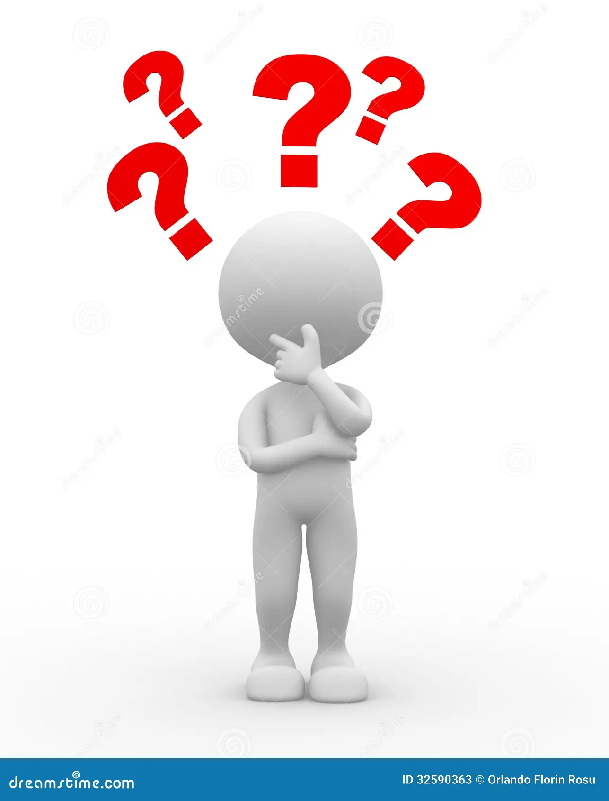

Wat is er te zien op de website? Een home pagina met een voorkant, een info pagina met info, een ons plan pagina (ons idee). Een bronnen pagina, een downloads pagina met bestanden van wur.nl en een contact pagina om contact op te nemen met ons. En een nieuws & updates pagina voor nieuwtjes.

Waarom hebben we gekozen voor een website? Omdat het informatief is en een uitdaging en we houden van uitdagingen. En omdat het origineel is.
